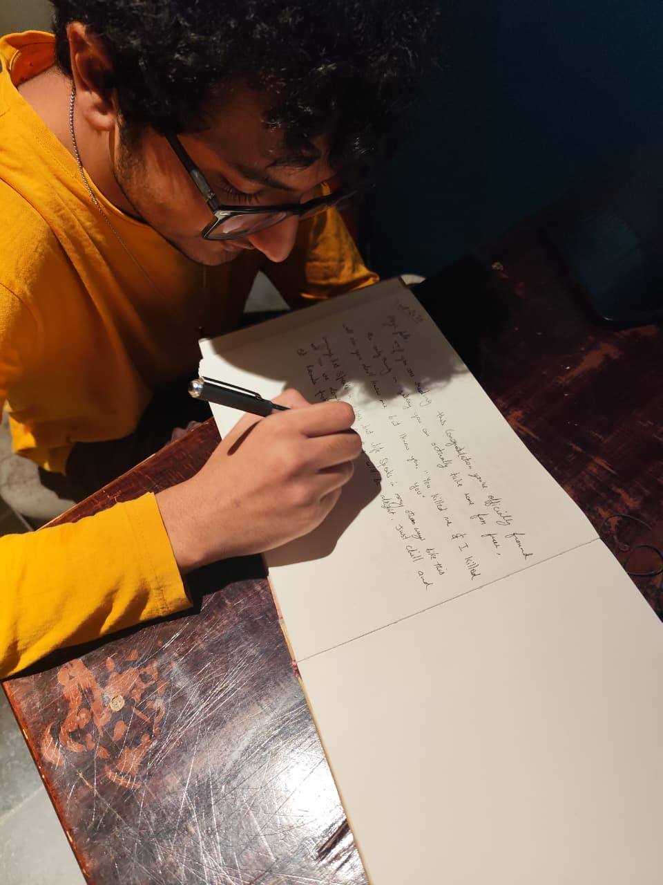

Building AI systems that learn, adapt, and endure — from multi-agent disaster networks to theories of artificial memory and persistent identity.

I'm Faraz — an independent AI researcher and BCA student building systems that go beyond benchmarks. My work sits at the intersection of multi-agent coordination, memory architecture, and the harder question of what it means for an artificial mind to genuinely develop.
Currently obsessed with SENTINEL, a zero-budget disaster early-warning system for India, and a long-horizon research project into persistent AI identity.
I don't write to publish. I write to understand — the world, myself, and the unbearable silence between what is felt and what can be said.
Open to research collaborations, AI engineering roles, consulting, and conversations that go somewhere interesting.